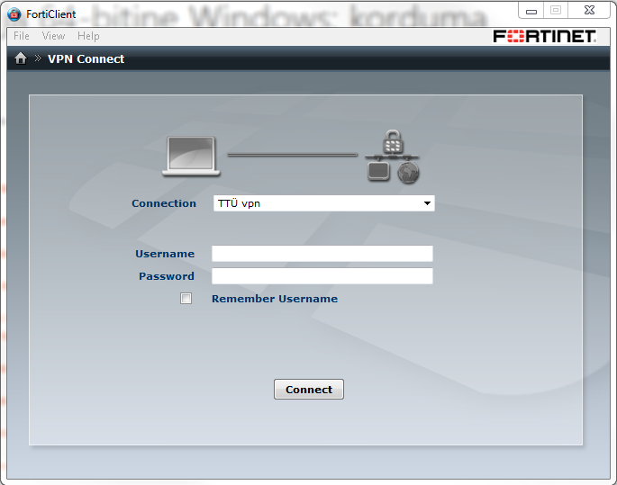

TTÜ võrguga turvalise ühenduse loomiseks on töötajatel võimalik kasutada VPN-tunnelit (ingl k virtual private network).
VPN-tunneli loomiseks on vajalik eelnevalt arvutisse laadida FortiClient SSLVPN tarkvara. Kodu- või sülearvutist saab luua VPN ühenduse TTÜ sisevõrguga ning pääseda ligi ülikooli arvutitele remote desktopi tegemiseks, serveritele või nt ülikooli eelarvetele.
Teenuse kasutamiseks on vajalik TTÜ Uni-ID konto
Eelseadistatud klientprogrammi saab Windowsile alla laadida siit:
32-bitisele windowsile www.ttu.ee/FortiClient32.msi
64-bitisele windowsile www.ttu.ee/FortiClient.msi
Vaadake siit kuidas tuvastada kas windows on 64 või 32 bitine
Eelseadistamata klientprogramm Linuxile
http://www.ttu.ee/forticlient_linux.tar.gz
Eelseadistamata klientprogramm Mac OsXile
http://www.ttu.ee/forticlient_macosx.dmg
Eelseadistamata klientprogramm Windowsile
http://www.ttu.ee/forticlient_win.exe
Tarkvara paigaldamiseks käivitage alla laetud fail ning jälgige ekraanil juhiseid.
1. Pärast paigaldamist käivitage FortiClient VPN, NB!kui küsitakse kiipkaarti, siis vajutage „cancel“(võib juhtuda korduvalt)
2. Sisestage oma kasutajanimi(username) ja parool(password) ning vajutage „connect“

3. Töö lõpetamisel katkestage FortiClient ühendus, vajutages „disconnect“
Eelseadistamata klientprogrammide seadistamiseks:
Serveri IP aadress: 193.40.244.197
Port: 10443
Probleemide korral kontakeeruge IT HelpDeskiga